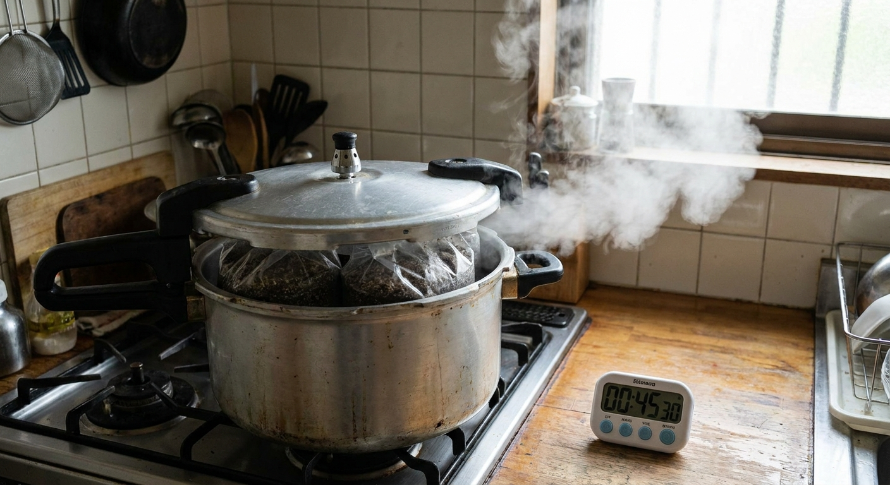
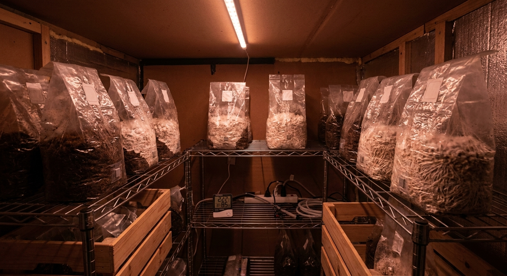

SOLUNA × ENABLER INC. — EXPERIMENTAL STRUCTURE
MYCELIUM
LAB
廃棄おが粉を培地にキノコ菌糸体を培養し、壁パネルを「育てる」実験棟。弟子屈・美留和ビレッジに建設。建築確認不要（7.2m²）。2026年8月完成目標。
7.2m²2,400×3,000mm
32枚600×600×100mm
¥0おが粉は廃棄物
¥41万在来比▼98%
8月2026.08
SECTION 01
今週やること — 4月28日〜5月2日
菌糸体培養の律速は「培養時間2〜3週間」。今日種菌を発注しないと夏に間に合わない。
1
種菌を今日発注
ヒラタケ（Pleurotus ostreatus）菌種 — 成長最速（2週間）、入手しやすい
森産業株式会社: 0279-52-2215 / 群馬県 — 種菌ブロック¥800〜1,500/個
丸昌きのこ（北海道）: 地元なので送料安い
必要量: 32パネル × 2個/パネル = 64個（まず20個で試作）
2
弟子屈周辺の製材所におが粉を打診
処理に困っている廃棄物なので無料〜¥1,000/袋で入手できる
必要量: 32パネル × 10kg = 320kg（スギ・カラマツ系、針葉樹おが粉）
釧路・中標津の製材所に電話一本。「廃棄おが粉をもらえますか」だけでいい
3
型枠をホームセンターで材料調達
合板12mm × 900×1,800mm 3枚（¥3,000）でパネル型10個分
型サイズ: 外600×600×100mm、合板蓋付き
コーナンPro釧路店 or カインズ中標津
4
スクリューパイル業者に見積もり依頼
タカミヤ（北海道代理店あり）: φ114.3mm L=2,200mm × 4本
マルスギ建設（北海道）: 施工込みで見積もり
美留和ビレッジ土地（501番1）の住所伝えて現地確認の日程調整
5
試作開始場所を確保
培養は20〜25℃・暗所・湿度85%が必要 = 夏の弟子屈の納屋がベスト
THE LODGEの物置・倉庫スペースが使えるか確認
最悪、段ボール箱+ポリ袋で密閉環境は作れる（¥0）
判断基準: 5月第1週に種菌が手元にあれば8月完成できる。なければ9月にズレる。今日が分岐点。
SECTION 02
菌糸体パネル製造プロセス
特別な設備は不要。圧力鍋、軍手、種菌、おが粉があれば作れる。
製造フロー（1バッチ = 10パネル, 所要2〜3週間）
培地配合仕様（600×600×100mmパネル 1枚分）
| 材料 | 配合比 | 重量 | 調達先 | コスト |
|---|
| スギ・カラマツおが粉 | 65% | 6.5kg | 近隣製材所（廃棄物） | ¥0 |
| 米ぬか（or 大麦粉） | 20% | 2.0kg | 精米所・農協 | ¥50 |
| 石灰（pH調整用） | 2% | 0.2kg | ホームセンター | ¥10 |
| 水 | 13% | 1.3kg | 水道 | ¥0 |
| ヒラタケ種菌 | — | 100g | 森産業・農業資材店 | ¥400 |
| 合計 | 100% | 10.1kg/枚 | — | ¥460/枚 |
成功・失敗の見極め
✅ 成功サイン
- • 3〜5日後: 表面に白い毛状の菌糸が現れる
- • 7〜10日後: 培地全体が白く覆われる
- • 14日後: 型を外すとブロック状に固まっている
- • 表面を触るとふわっとした質感
- • 匂い: きのこの香り（きつくない）
❌ 失敗サイン → 対処
- • 緑・黒・オレンジ色: 雑菌汚染 → 廃棄、滅菌強化
- • 7日後も白くならない: 種菌不活性 → 新しい種菌
- • ドロドロに溶ける: 過湿 → 含水率55%に
- • 異臭がする: 嫌気発酵 → 換気穴を開ける
- • 固まらない: 密度不足 → 強く押し固める
最重要: 無菌操作
種菌植え付け時だけは徹底する。アルコール消毒した容器、使い捨て手袋、マスク着用。培地が熱いうちは絶対に開けない（35℃以下になるまで待つ）。ここさえ守れば成功率90%以上。

② 滅菌 121℃×2h

④⑤ 培養 14〜21日
SECTION 03
最短スケジュール — 2026年5月〜8月
菌糸体培養が律速（14〜21日）。5月第1週に種菌を仕込まないと間に合わない。
工程表（週次）
SECTION 04
実験棟設計 — 7.2m²（建築確認不要）
2,400×3,000mm。建築基準法第6条：10m²以下は確認申請不要（防火地域外）。美留和ビレッジは原野 = 適用外。
平面図 — 1:50（2,400×3,000mm）
断面図 A-A（E-W方向）— 1:50
部材リスト
| 部材 | 仕様 | 数量 | 調達 | 単価 | 合計 |
|---|
| 菌糸体パネル（自家製造） | 600×600×100mm | 32枚 | 自製 | ¥460 | ¥14,720 |
| ツインウォールポリカ | 10mm厚 3×6尺 | 6枚 | ホームセンター | ¥4,500 | ¥27,000 |
| ポリカ屋根材 | 6mm厚 3×6尺 | 4枚 | ホームセンター | ¥3,200 | ¥12,800 |
| スクリューパイル φ114 L=2200 | 4本（コーナーのみ） | 4本 | タカミヤ等 | ¥25,000 | ¥100,000 |
| 圧入工賃（半日） | ユニック+オペ | 1式 | 地元業者 | ¥50,000 | ¥50,000 |
| 2×4廃材フレーム | 38×89mm | 30m | 解体現場・製材所 | ¥0〜200 | ¥6,000 |
| 防腐土台材 | 105×105mm | 8m | 建材店 | ¥1,200 | ¥9,600 |
| 床合板 | 12mm 3×6尺 | 4枚 | ホームセンター | ¥2,800 | ¥11,200 |
| アルミHジョイント（ポリカ用） | 2m | 10本 | ホームセンター | ¥1,200 | ¥12,000 |
| 種菌（ヒラタケ） | 100g/袋 | 40袋 | 農業資材店 | ¥400 | ¥16,000 |
| おが粉（廃棄物） | スギ・カラマツ | 320kg | 製材所（無料） | ¥0 | ¥0 |
| 米ぬか | — | 65kg | 精米所・農協 | ¥20 | ¥1,300 |
| 型枠用合板 12mm | 900×1800mm | 5枚 | ホームセンター | ¥2,200 | ¥11,000 |
| 圧力鍋（滅菌用） | 20L以上 | 2台 | Amazon・中古 | ¥8,000 | ¥16,000 |
| 雑材・消耗品 | — | — | — | — | ¥30,000 |
| 合計 | — | — | — | — | ¥317,620 |
SECTION 05
コスト内訳
材料費（菌糸体）
¥5万
おが粉¥0 + 種菌¥1.6万 + 米ぬか等
基礎（スクリューパイル）
¥15万
4本 + 圧入工賃（半日）
実験棟 総コスト
¥41万
同規模 在来工法 ¥350〜500万 比 ▼92%
※ 圧力鍋・型枠は量産フェーズで転用。実質的な使い捨てコストは¥33万
SECTION 06
評価指標 — 実験棟で測ること
この実験棟はプロダクトでなく、データ収集装置。この結果で本設計書（house.html）の数値を実証する。
| 測定項目 | 目標値 | 測定方法 | 判定時期 |
|---|
| 熱伝導率 λ | ≤0.05 W/mK | 熱流計法（簡易型 Testo 435） | パネル完成後 |
| 圧縮強度 | ≥3 MPa | 万能試験機（代理機関委託 or DIY） | パネル完成後 |
| 吸水率 | ≤5%（24h水没） | 乾燥重量 vs 水没後重量 | パネル完成後 |
| 気密性能 C値 | ≤1.0 cm²/m² | ブロワードア法（レンタル可） | 棟上げ後 |
| 内外温度差 | 冬期Δ25℃以上保持 | 温湿度ロガー設置（10分間隔） | 通年観測 |
| 耐久性（初年） | 変形・腐朽なし | 目視 + 含水率計 | 2027年春点検 |
| 製造再現性 | 成功率≥80% | バッチごとに記録 | 第2バッチ完了後 |
この実験棟が成功したら次のステップ
1. 測定データを元に国土交通省「新技術情報提供システム（NETIS）」に登録申請
2. 一般財団法人建材試験センターに正式な性能評価依頼（JIS認証ルート）
3. 美留和ビレッジ Phase1（10棟）で量産 → コスト¥130万/棟を実証
4. 「菌糸体建材」として日本初の建築確認取得事例へ
SECTION 07
科学的試験プロトコル — 懸念を潰す順序
懸念ごとに「何を・どう測るか・合否基準」を明確化。全試験を実験棟建設と並行して実施。外部委託は燃焼試験のみ。
TEST 01
吸水率試験 — JIS K 7209準拠
7月 / 自前 / ¥0
目的と合否基準
疎水化処理3種（蜜蝋・水ガラス・無処理）の防水効果を定量比較する。
吸水率 < 5%（24時間水没後）
参考: ウレタンフォーム 3〜4%
手順
- 試験体: 100×100×25mm × 各処理3枚
- 105℃で24時間乾燥 → 乾燥重量 W₀ を記録
- 蒸留水に完全水没（重しで沈める）24時間
- 取り出し後、表面水を拭き取り重量 W₁ を記録
- 吸水率 = (W₁－W₀) / W₀ × 100 (%)
- 3枚平均と標準偏差を記録
💡 失敗した処理は配合変更して再試験（水ガラス濃度 5→10→20%）
TEST 02
熱伝導率試験 — JIS A 1412準拠
7月 / 自前orレンタル / ¥1万
目的と合否基準
設計値「λ≈0.04 W/mK」が実際に達成されているか確認。HEAT20 G2の根拠数値を実証する。
λ < 0.05 W/mK
グラスウール16K: 0.045 / ウレタン: 0.024
必要機材
熱流計（Testo 435等） — レンタル¥5,000〜10,000/日
温度ロガー × 2 — 購入¥2,000/個
または北大農学部に依頼（JIS装置あり、論文データとして使える）
手順（熱流計法）
- 試験体: 300×300×100mm
- 一面を加熱板（50℃）、他面を冷却板（10℃）で挟む
- 定常状態（ΔT変化 <0.1℃/h）まで待機 約3〜6h
- 熱流密度 q [W/m²] と温度差 ΔT を記録
- λ = q × d / ΔT（d=厚さ 0.1m）
- 3回測定して平均値を採用
TEST 03
圧縮強度試験 — JIS A 5908準用
毎バッチ / 自前DIY / ¥1万（初回のみ）
目的と合否基準
バッチ間の強度ばらつきを定量化し、製造プロセスの安定性を証明する。
圧縮強度 > 3 MPa
バッチ間CV < 15%
ヘンプクリート 0.2〜1.0 MPa / ALC 4〜6 MPa
DIY試験機の作り方
油圧ジャッキ（2t用 ¥3,000）+ ロードセル（¥4,000）+ 鋼板で自作。
試験体: 50×50×50mm立方体（パネルから切り出し）
荷重速度: 1 mm/min でゆっくり加圧
破壊荷重 F [N] → 強度 = F / 2,500 [mm²]
各バッチから5個採取→平均・SD・CVを記録
TEST 04
凍結融解試験 — JIS A 1148準用（世界初データ）
2026秋〜2027春 / 北大委託
なぜ世界初か
菌糸体が−25℃凍結→融解を繰り返した時の劣化データは世界に存在しない。このデータを取ること自体が論文になる。
50サイクル後の強度保持率 > 80%
重量変化 < 3%
参考: コンクリートは300サイクルで80%保持が基準
試験プロトコル
- 試験体: 100×100×25mm × 3種処理×各5枚
- 初期重量・強度を記録（TEST 01/03の結果使用）
- −25℃×4時間 → 室温融解×4時間 = 1サイクル
- 10サイクルごとに重量・圧縮強度を測定
- 50サイクル完了後に最終評価
🏔️ 北大低温科学研究所（札幌）に共同研究申請。「世界初データ」は採択されやすい
TEST 05
燃焼試験 — JIS A 1321準拠
2026秋 / 建材試験センター委託 / ¥20万
構法で解決する戦略
菌糸体単体は燃える。防火性能を材料で解決しようとすると詰まる。石膏ボード被覆で構法解決するのが最速。
採用構法
菌糸体パネル 100mm
+ 石膏ボード 12.5mm（防火被覆）
令129条: 防火被覆内側断熱材は対象外
攻めの試験設計（3種比較）
試験体A: 菌糸体単体（対照）
試験体B: 菌糸体 + 炭化竹 20%複合
試験体C: 菌糸体 + 炭化竹 + 水ガラス含浸
CがJIS A 1321の難燃2級をクリアすれば石膏ボード不要。それだけで設計が大幅に自由になる。
TEST 06
製造プロセス管理 — 統計的プロセス制御（SPC）
全バッチ / 自前 / ¥0
バッチごとに管理変数を記録し、強度との相関を分析する。量産フェーズで再現性を証明するためのデータベースを今日から構築する。
| 管理変数 | 目標値 | 許容範囲 | 測定器 | 重要な理由 |
|---|
| 培地含水率 | 55% | ±2% | デジタル水分計 ¥3,000 | 低→菌糸広がらない / 高→嫌気発酵 |
| 培養温度 | 22℃ | ±1℃ | 温度ロガー ¥2,000 | 15℃以下で成長停止 / 30℃以上で雑菌優位 |
| 種菌活性 | 3日以内に菌糸拡大 | — | 目視（ペトリ皿で事前確認） | 不活性種菌を使うと全バッチ失敗 |
| 滅菌温度・時間 | 121℃ × 120分 | ±5℃ / ±10分 | 圧力計・タイマー | 滅菌不足が最多失敗原因 |
| 培養日数 | 16日 | 14〜21日 | カレンダー | 短→強度不足 / 長→子実体発生 |
| 完成パネル密度 | 200 kg/m³ | ±20 kg/m³ | 秤+ノギス | 密度と強度は強相関 |
記録フォーマット（Notionかスプレッドシート）
バッチID / 製造日 / 含水率 / 温度ログ（平均・最大・最小）/ 滅菌時間 / 種菌ロット / 培養日数 / 完成密度 / 圧縮強度（平均・SD）/ 吸水率 / 外観評価（1-5）/ 備考
10バッチ溜まったら回帰分析。どの変数が強度に一番効くかが見える。これが量産設計書の根拠になる。
試験の実施優先順位
まず
TEST 01 + 06
吸水率 + SPC記録開始
器材: 秤のみ / ¥0
パネル完成次第すぐ
次に
TEST 02 + 03
熱伝導率 + 圧縮強度
レンタル機材 / ¥2万
7月中
秋以降
TEST 04 + 05
凍結融解 + 燃焼試験
外部委託 / ¥20万〜
北大・建材試験センター
全試験クリア後のロードマップ
① NETIS（国交省新技術情報システム）登録申請 → 公共建築での採用実績を積む
② 北大との共同論文 → 世界初データで国際誌掲載 → 対外信頼性の確立
③ 建材試験センターに正式性能評価依頼 → JIS認証（2〜3年）
④ 美留和ビレッジ Ph1（10棟）で量産・コスト¥130万/棟を実証
⑤ 日本初の菌糸体建材による建築確認取得事例へ